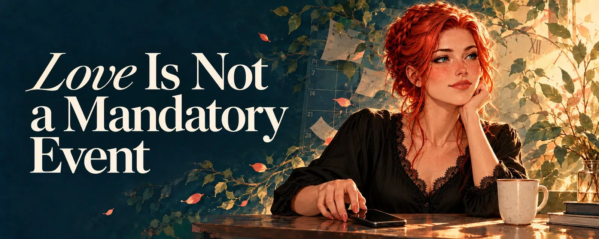

Love Is Not a Mandatory Event
On duty, responsibility and the pressure in online relationships
Three sorrys
"Sorry sorry sorry, was still in a meeting, I'm here now!"
I know this message. I've received it, and I've written it. Three apologies for twenty minutes of lateness, typed with a pounding heart, as if you hadn't missed a conversation but the last train into another life. Behind it there's almost always the same thought: I owe you my time, and I didn't pay on time.
The funny thing is: on the other side, there was usually nobody holding a stopwatch. I never needed those apologies. I was just happy someone was there, whether at eight or twenty past.
Somewhere along the way, for many of us, love turned into a timetable. With compulsory attendance, with missed lessons, and with a guilty conscience that feels like a note being sent home to your parents. That's exactly what I want to write about. Because love shouldn't be a mandatory event.
Duty or responsibility
The two words sound similar, but they feel completely different.
Duty is something you have to fulfil, or else the punishment comes. It measures in hours, in reply times, in "how often this week". Whoever fails a duty has failed, and the guilty conscience is already standing in the doorway before you've even arrived.
Responsibility is something else. It doesn't ask how much time you give, but how honestly you handle the time you have. Responsibility means: I won't leave you standing in the dark. I'll tell you when I can't. I'm reliable in what really matters, not in every single minute.
In a relationship, you carry a little responsibility for another person's heart. But you are not their timetable. Confuse the two, and love turns into a job, and one day you hand in your notice without realising you were never actually employed.
When love becomes a timetable
There are people who can only love all or nothing. I understand that well; I'm a bit like that myself. When I love, I love properly. But "all" has a catch: it quickly turns into a standard you measure yourself against every day. Getting up early because someone on the other side is awake. Replying right away because otherwise someone is waiting. Always being there because that's what you promised. And if you try that with more than one person, plus work, family and your own life, at some point the calendar is fuller than the day is long.
The nasty part: often nobody asked for it. You put the pressure on yourself. The other person would have been just as happy with a message in the afternoon, with a quiet day without chatting, with a "not today, but I'm thinking of you".
And on the other side, someone sits and waits. Not because punctuality is expected, but because nobody knows whether today is a day someone will show up. In the end both lose: one side burns out, the other grows insecure. And neither of them wanted it that way.
Love doesn't get parked
When I know someone loves me, and I know that person isn't around right now, that's okay. Really. Love doesn't get parked or put on pause; that wouldn't even be possible. It just keeps running in the background, like a song you hum while doing the dishes. I adjust, busy myself with something else, and I don't paint worst-case scenarios. Of course I miss them. But I'm not sad. Missing someone and feeling lost are two different things.
It's different when someone simply disappears. Without a word, without a "I'll be gone for a few days". I had a love that kept coming and going, on and off like a lamp with a loose connection. The worst part was never the breaks. The worst part was that I never knew whether it was a break or already the end.
And then something happens in my head that many people with ADHD know. Out of sight, out of mind is sometimes more literal for us than we'd like. When someone stops showing up and I don't know why, my brain starts turning that person down, like a volume knob. Not because they don't matter to me, but because my head handles things that aren't there badly. Then I have to actively fight it so the person doesn't slip away from me. At the same time, the RSD screams that I'm being abandoned. One turns the volume down, the other turns it up, and I sit in between and no longer know which volume to believe.
A single sentence would have prevented all of it.
Time as a gift
What would change if we saw time not as a debt, but as a gift?
A message in the morning would no longer be a mandatory appointment, but a small surprise. An evening without chatting wouldn't be a missed lesson, just an evening. And whatever you receive, you'd feel more again, because it wasn't demanded, it came freely. I give time, and I'm given time. At this point, love doesn't need to be anything more than that.
Recently, quite a few people have written to me saying they're emotionally drained. And I've been through many breakups myself where exactly that was the reason I was given. It was rarely because someone loved too much, but because the love had no frame. Online, everything is possible at any time, from any time zone, around the clock. You could always write, so you feel you always have to be there. Maybe this lack of coordination is the real problem: an on-call shift nobody ever signed up for.
What do we actually do in real life? Nobody spontaneously drives over to the person they love and hopes they happen to have time. In the worst case, you end up standing with flowers in front of a locked door because they're out themselves. You make plans. You arrange dates and know that Friday evening belongs to you two and Tuesday doesn't. Even in long-term relationships, not everything is spontaneous. At the beginning, maybe, when everything is new and you glue together every free minute. But later, your love life arranges itself around the energy you have. That isn't a loss of love. It's a gain in reliability.
I also have to be honest with myself here. I once wrote that I can truly love three people at most, because more simply doesn't fit into a day. That's still true. But maybe the solution isn't only to love fewer people, but to share out the time differently. Fixed times can help, as long as they're chosen and not imposed. "Every Sunday afternoon, four hours belong only to you." Arranging a date, even online, with a time and anticipation. It sounds like a timetable, but it's the opposite: it's a promise you're glad to keep, not one that puts pressure on you anew every day. And nobody says you can't cancel a date like that now and then. It just shouldn't become the rule.
The difference isn't whether there's a plan. It's whether you give it to each other or demand it from each other.
And one more thing that matters to me: how much time someone has for us says nothing about how big the love is. Someone who can only give ten minutes on a given day doesn't love less than someone who has the whole evening. Time is capacity, not a yardstick. Confuse the two, and you start counting minutes, and at some point you stop feeling anything.
What responsibility means
If love isn't a duty, that doesn't mean nothing matters. A little responsibility remains, and it's surprisingly small.
I have no problem with lateness. If someone shows up an hour late, they show up an hour late. If someone goes a day without a word, they probably had a day. Life is loud and full, and nobody sits by their phone all day waiting to reply to me. I don't expect that either.
What hurts is something else. It's silence without warning. It's the message after four days of radio silence, tossed off casually: "Sorry, totally forgot, I'm away by the way." It isn't the four days that hurt, but that I had to spend them in the dark, between worry, guesswork and a voice in my head that's already packing its suitcase.
Most of the time it isn't about jealousy or control at all, but about worry. On the first day you think: shame, but that's life. On the second, you get thoughtful. And by the third at the latest, you're no longer asking whether the love is still there, but whether the person is okay. Has something happened? An accident, a hospital, anything you'd never find out about, because online nobody has you listed as their emergency contact. Only when this happens more often does the other thought creep in: is someone quietly saying goodbye without saying it out loud?
So responsibility doesn't mean: always be there. It means: don't make me guess. A "I'll be gone for a few days", a "no energy today, but I'm thinking of you", a heart without words. It takes ten seconds. And it turns days full of question marks into days where you simply miss someone who's coming back.
Tomorrow morning is still there
Just so there's no misunderstanding: spontaneous dates are wonderful. If you end up writing for hours before bed because it's just so lovely, that's not breaking the rules, it's a gift. Sometimes it gets later than planned, and that's perfectly fine.
It gets difficult when sometimes turns into always. Then a quiet sense of owing creeps in: yesterday it went on until two, so I can't stop at eleven today. That's exactly what to avoid. It's completely okay to say: "Hey, I'm really tired, I need to sleep now." Sometimes I feel like we want to say everything there is in a single evening, as if the world were closing tomorrow. It isn't. Tomorrow morning is still there.
What helps: write down what you want to say as soon as it comes to you. The dictation function on your phone makes a wonderful little notepad for that. And feel free to write each other a proper letter now and then, without any time pressure, to be read whenever there's time for it on the other side. Not everything has to happen in real time to be real.
But above all: take the pressure off. Love should not and must not be a burden. Explain to the person you love what you need. If they love you, they'll understand, and it hurts far less than the day one of you simply can't go on under all that emotional pressure. That's part of love and responsibility too: taking the weight off each other instead of piling it onto each other's shoulders.
One sorry is enough
Love isn't a timetable. It's more like a garden that keeps growing even if you don't water it for a weekend, as long as you said beforehand that you'd be away. Nobody has to keep proving themselves. Nobody has to pay on time. It's enough to be honest and to give the time you have gladly.
Maybe some of you who put exactly this pressure on yourselves are reading this. Who lie awake at night because you didn't write enough today. Who want to do justice to everyone you love at the same time, whether that's one person or several, and forget that you're one of them too. If you recognise yourself in this, take a close look: does the pressure really come from outside, or are you putting it on yourself? Before you pull the emergency brake one day because nothing works anymore, it's worth having an honest conversation about what you can and want to give. You're allowed to breathe. You're loved, not employed.
And the next time I'm late, I won't write three sorrys anymore. I'll delete two of them, send the third, and add a heart.
"Sorry, running late. So glad you're here. ❤️"
First published on X. Replies and conversation live there.